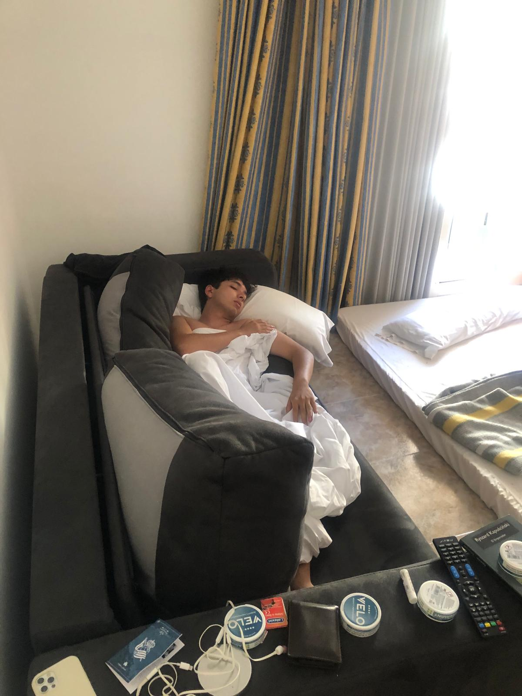
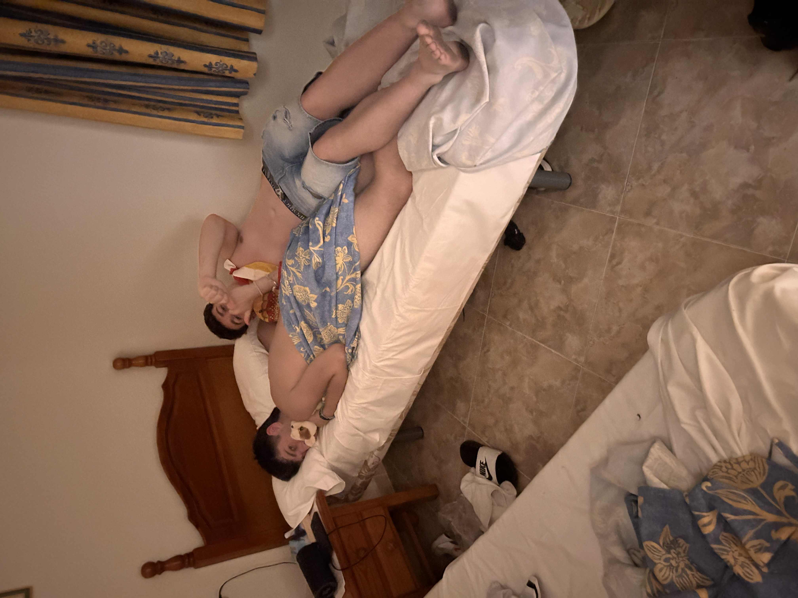
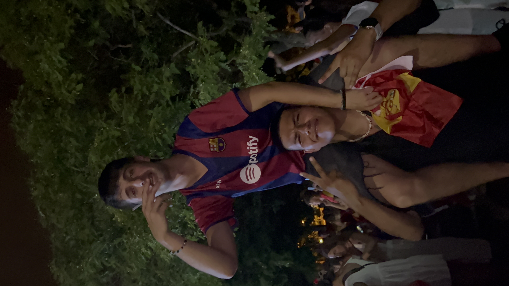

🌞 Bienvenido a Salou
Conocida por sus playas extensas, ambiente veraniego y PortAventura World.
¿Qué hacer en Salou?
Salou es uno de los destinos turísticos más populares de la Costa Dorada. Disfruta de largas playas con todos los servicios, el famoso parque temático PortAventura World, y paseos marítimos como el de Jaume I. Es ideal tanto para familias como para jóvenes que buscan diversión bajo el sol.

📸 Recuerdos de mi viaje a Salou
Aquí irán algunas fotos personales con mis amigos en Salou.


